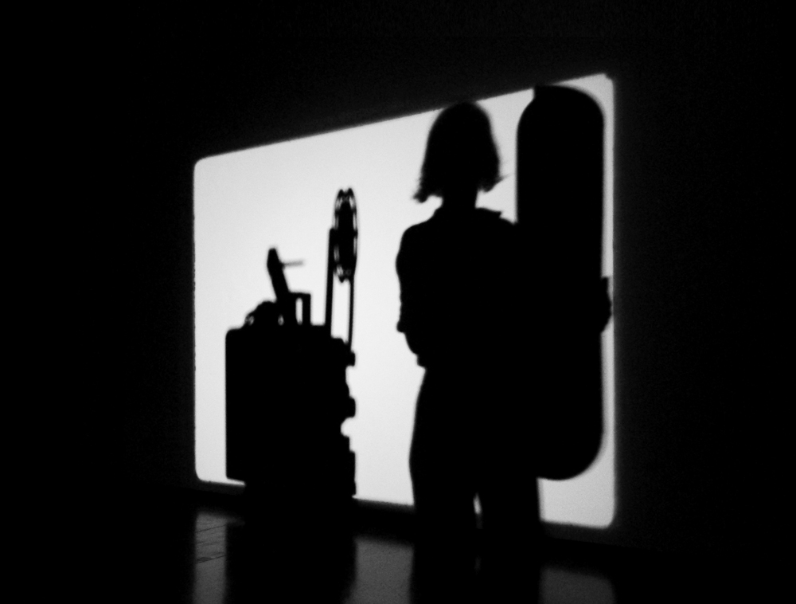
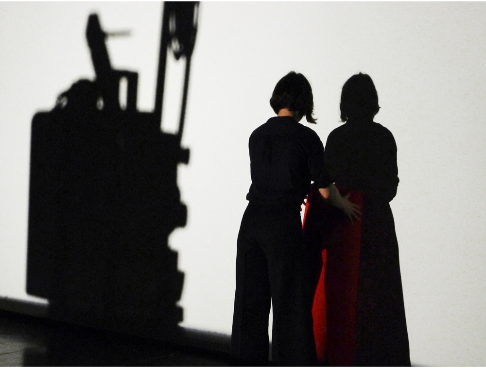

Performance view photographs: Érik Bullot
2014 — 2015
Performance — environment
16mm films, 8 x 1m red carpet, palm tree, variable measure of ribbon, raincoat, kettle, cardboard box, dry ice, water, microphone, ostrich feather, tungsten lamp, mussel shells, 2 16mm film projectors on wheeled supports
From a territory inherited from the confluence of cinema, sculpture, and dance, the conditions of enunciation of the filmic image are transformed. Cinema's luminous resonance occupies a space and has the potentiality of turning it into a tactile, magnetic, and gaseous geometry from which projecting does not simply consist of creating optical and magnified images through a film and onto a screen. To project also relates to thought processes and bodily actions.
We Only Guarantee The Dinosaurs has been presented in Mexico, Canada, Cuba, Belgium, Ireland, Argentina, France and Spain.
«In a day and age when moving images are so ubiquitous, so easy to make and handle, and so throwaway, this eccentric process by which she worked and worked in front of the audience towards a fragile apparition of a film image affected me as a purification ritual for the moving image itself, a rebirth, a small and indecisive miracle. Which risks making the performance sound very pompous - in fact it was very funny as well and full of healthy absurdity». —Maximilian Le Cain, EFS Publications 2016.
«[We Only Guarantee the Dinosaurs] muestra que una porción de hielo es YA montaje cinematográfico y que la casa del cine tiene muchas más estancias de las que el imaginario valetudinario ofrece». —Julius Richard, Transit: Cine y Otros Desvíos 2014.
«Así, el eco de la primera impresión era que estaba ante un espectáculo de variedades, antiguo y divertido, para después cortar con ello despreocupadamente e instalar en mi cabeza la magia del Cine. El sistema del Cine, de la Historia del cine». —Jorge Núñez, Fuerza Vital 2014.